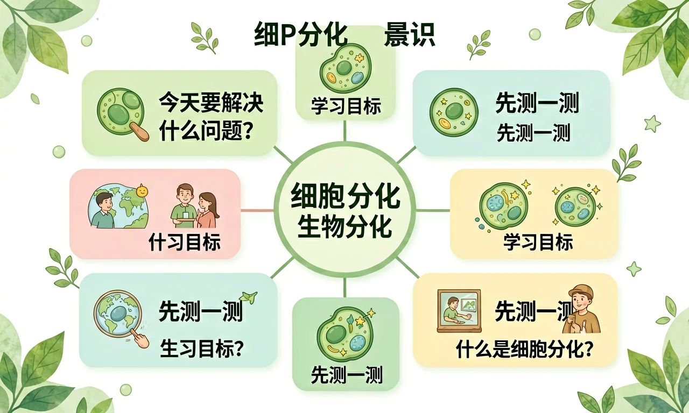

Interactive Canvas
细胞分化过程模拟
拖动滑块观察一个干细胞如何分化为四种不同组织的细胞
拖动滑块开始观察分化过程
一个受精卵如何发育成拥有200多种不同细胞的人体？答案就在细胞分化。

选一个你关心的问题
选择或输入后，本课围绕你的问题展开。
细胞分裂的结果是什么？
在发育过程中，细胞在形态、结构和功能上发生稳定性差异的过程就叫细胞分化。注意关键词“稳定性”——这意味着分化一旦发生就不会轻易改变，是持久的、不可逆的。
但是：为什么我们身体有肌肉细胞、神经细胞等200多种不同细胞？
所以：学习细胞分化——让相同细胞变成不同类型的过程
在发育过程中，细胞在形态、结构和功能上发生稳定性差异的过程。
形态变化（变长/变扁）、结构变化（细胞器增减）、功能变化（专门化）
持久性（贯穿一生）、不可逆性（通常不能逆转）、遗传物质不变（基因相同）
细胞分化的直接结果就是形成了不同类型的组织。人体有四种基本组织，每种都由特定形态和功能的细胞构成，它们协同工作维持生命活动。理解这四种组织是学习器官和系统的基础。下面我们逐一认识它们的特点和分布。
细胞排列紧密，保护和分泌功能。如皮肤表皮、小肠内壁。
细胞呈梭形，具有收缩和舒张功能。如心肌、骨骼肌。
细胞有突起，能感受刺激和传导神经冲动。如脑、脊髓。
细胞间质多，支持、连接、营养功能。如血液、骨、脂肪。
虽然分化通常不可逆，但人体中存在一类特殊细胞——干细胞，它们保留了分化成多种细胞类型的能力。胚胎干细胞可以分化为任何类型的细胞（全能性），成体干细胞如造血干细胞则只能分化为有限几种细胞。干细胞研究为再生医学提供了巨大希望。骨髓移植治疗白血病就是利用造血干细胞的分化能力重建患者造血系统的成功案例。此外科学家正在研究诱导多能干细胞技术来修复受损组织。
拖动滑块观察一个干细胞如何分化为四种不同组织的细胞
细胞分裂就像复印机，把一个细胞复制成两个完全相同的细胞，结果是细胞数目增多但形态功能不变。细胞分化则像变形金刚，让相同的细胞逐渐变成形态结构功能都不同的细胞类型。分裂是分化的基础——必须先有足够多的细胞，才能进行分化。两者相互配合，共同完成生物体的发育过程。在胚胎发育中，受精卵先经过多次分裂产生大量细胞，然后这些细胞再逐步分化为各种组织和器官。比如人体有约200种不同类型的细胞，它们都是从同一个受精卵分化而来的。
错：分化就是分裂的另一种说法
对：分裂增数量，分化变类型，两者不同
错：分化后细胞DNA不同了
对：DNA相同，只是表达的基因不同
错：任何细胞随时可以重新分化
对：高度分化的细胞通常不可逆
填空：细胞分化的结果是形成了不同的____。
解释为什么说"细胞分化是生物体发育的基础"。
设计方案：如果你是科学家，如何利用干细胞技术帮助脊髓损伤患者？
白血病患者进行骨髓移植治疗，主要利用了骨髓中什么细胞的什么特性？
细胞分化让一个受精卵发育成拥有200多种细胞的复杂人体。
前置、后续知识由标准模块自动渲染。